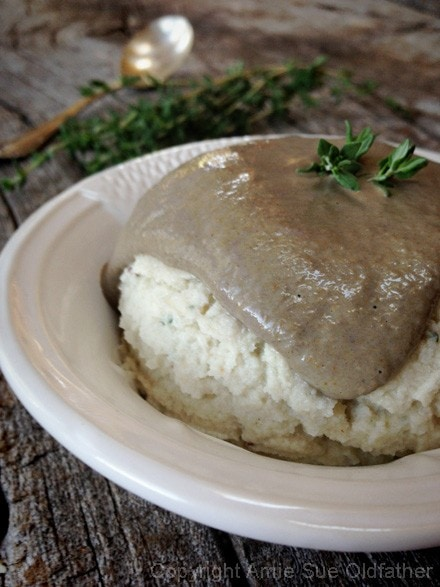

Mushroom Gravy
~ raw, vegan, gluten-free ~
Have you ever made a recipe, thinking that you know the end result but when the end result presents itself… it is not at all what you expected and it turned even better than you could have imagined? Today, that happened to me. Its been a coon’s age since I have had gravy but I am no stranger to it.
When I was in sixth grade we use to eat at a restaurant called 4B’s. It was a cafeteria setup where you grabbed a tray and slid it down the metal bar that was in front of piping hot containers of food.
You pointed at what you wanted and they dished it up for you. I can’t say that we were weekly regulars of this place, but we went enough to where they had “my regular”. This consisted of mashed potatoes and french fries which I then drowned in brown gravy. I hate to admit this but it never dawned on me that I was eating nothing potatoes and gravy. It was a family member who pointed out this fact that I somehow had missed. :) Just talking about it makes my cheeks squirt.
Anyway, this recipe turned out simply exquisite! The mushrooms give it a real meaty and earthy flavor.
Ingredients:
Yields 1 cup
- 1/3 cup cashews, soaked 2+ hours
- 1 1/2 cup mushrooms, see #2 below
- 1/3 cup water
- 1 tsp raw agave or maple syrup
- 1 1/2 tsp apple cider vinegar
- 1 small garlic clove
- 1 tsp fresh cracked black pepper
- 1/2 tsp Himalayan pink salt
- 1/2 tsp ground turmeric
Preparation:
- After soaking the cashews, drain and rinse and discard the soak water. Wave “bye-bye” to the phytic acid. :) Place in blender.
- Wash, dry and remove the stems from the mushrooms. Compost the stems. If they are small button mushrooms, measure out 1 1/2 cups worth. If they are large, rough chop them before measuring. This doesn’t have to be an exact science. Add to blender.
- Add in the water, agave, vinegar, garlic, pepper, salt and turmeric to the blender. Process until the gravy becomes creamy. It shouldn’t feel gritty.
- Store in fridge for 2-3 days. The gravy will discolor a little on the top, stir before serving.

© AmieSue.com